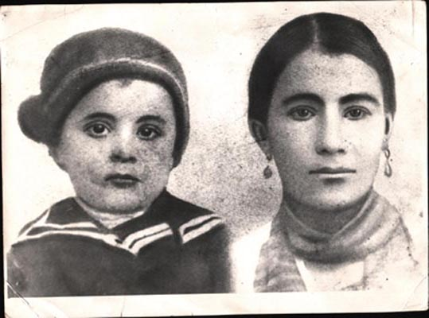
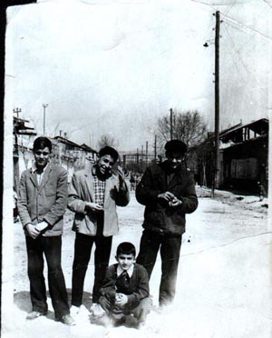

y;y a3s0r in2 danyk
Ala,gyrd5 aba wa.u tovk glinyk a,qarhi amynaharovsd martu777

L¦on Wasil3anu
:ovrkia3ovm |
Ca.;i
badja-nyru
1914
;waganix sgsa/ Ar¦md3an Ha3asdanovm dy.i ovnyxan
]artyr5 oronx clovqn er gancna/ )sman3an ga3srov;3ovnu1 Ar¦md3an
Ha3asdanovm ¦ ‘okr Asia3i ha3apnag dara/kovm
ha3 =o.owovrtu tar2aw )sman3an ;ovrkyri clqawor orsu1
:ovrkyru anqna o[n[axnovm ein ha3yrin5 [qna3ylow nov3nisg
yryqanyri g3anku1 )sman3an ga3srov;3an go.mix gadarwa/ a3s
hry,awor orsu go[wyx 8Ha3ox my/ y.y-n95 kani or
1914-1916;;7
a3s ]artyrovm zohwyxin awyli kan 1,5
milion ha31 A3s ]artyrix ‘rgwylov hamar ,ad martik
;o.nylow irynx dnyru5 galwa/ku5 ca.;yxin a3l yrgrnyr5 a3l
wa3ryr5 ordy. [ga3in 0sman3an ;ovrkyri bys ta=an
orsortnyr1
A3tbisi martganxix ein Wasil3ani
dohmix amovsinnyr` Wy-an ¦ L¦onu5 oronk
ca.;yl yn Ala,gyrdix 1914;waganin1 |
| 
Wy-an ir orti` Hagopigi hyd
_ovsasdanovm |
Ca.; a-a]in
L¦on Wasil3anu /nwyl e
1887;waganin5
Ala,gyrdovm5 hax;ovqi undanikovm5 isg Wy-a Wasil3anu 6
Movrat3anu /nwyl e 1890
;waganin nov3n Ala,gyrdovm1
Lywonu ¦ Wy-an amvsnaxyl yn 1911;waganin1
1914;wagani
ta=an ]artyri badja-ow nrank Ala,gyrdix ca.;ovm yn
_ovsasdani Grasnotar ka.ak1 Nrank 1915-1930;;7
abryl yn Grasnotar marzi Lapinsg ka.akovm5 ordy. 1926;waganin
/nwovm e nranx a-a]in ortin` Hagopu11928;waganin
/nwovm e yrgrort ortin` Sahagu1 1929-1930
;wagannyrin _ovsasdanovm sow e
sgswovm5 ori badja-ow [ors darygan Hagopigu
mahamovm e1 Gorxnylow my/ ortovn5 Wasil3an
amovsinnyru 1930
;waganin Grasnotarix ca.;ovm
yn Ar¦yl3an Ha3asdan1 |

Wasil3annyri undaniku Yr¦anovm
|
Ca.; yrgrort
Ha3asdanovm nrank ovnynovm yn yrgov
tovsdr ¦ yrgov orti5 oronk a3=m abrovm yn
Ha3asdanovm irynx yryqanyri ¦ ;o-nyri hyd1
L¦on Wasil3anu mahanovm e
1972;waganin5
isg Wy-a Wasil3anu 6 19836in1
Nrank mahaxyl yn Yr¦anovm5 pnagan |
Harxazrov3x
In[bys poloris ha3dni e5or mi,d el
ha3yru gaqman my] yn y.yl 0dar p-nagalnyrix1<ad martig
tar2yl yn nranx zohu5isg ,adyrn el ca.;agan yn tar2yl1:o.yl yn
irynx pnagarannyru 5irynx ovnyxwa/kn ov tar2yl bantovqdnyr1Myz
,ad er hydakrkrovm a3tbisi ca.;agannyri g3anku ¦
mynk5in[bys lracro.nyr harxazrov3x anxgaxrink Wasil3annyri
undaniki hyd1:y ordy.ix yn nrank ca.;yl5 ¦ ;y in[ e
badahyl nranx hyd myz gbadmi Wasil3annyri awac ortin`
Mgrdi[u1
 |
 |
| Mgrdi[ Wasil3anu Yr¦anovm
1956;7 |
Mgrdi[ Wasil3anu Yr¦anovm
ungyrnyri hyd |
- Baron Mgrdi[5 in[o|v yn @yr
/no.nyru ca.;yl71972
1983
6 Ala,gyrdu mia=amanag pnagyxwa/ e y.yl
¦ ha3yrow ¦ ;ovrkyrow1 A3t badja-ow el ;ovrkyru
anunthad jn,ovm yn ha3yrin1Ys hi,ovm ym5;y in[bys er ha3rs
badmovm5or ;ovrkyru hajakq ha3yrin gaqyl yn5gam cntagaharyl
gam el barzabys wa-yl yn ‘a3di nman1 Yw a3t el badja- e
hantisaxyl5or mynk 1914;waganin
ca.;agan ynk tar2yl1
- I|n[ e @yz ha3dni @yr ha3ragan
0]aqix7
6 Ma3rs mi,d badmovm er irynx dan masin
¦ asovm er7 8y;y a3s0r in2 danyk Ala,gyrd5 aba wa.u
tovk glinyk a,qarhi amynaharovsd martu5 kani or a3ndy. ovnym
gilocramnyrow osgi ¦ atamant1 A3t bahyl ym mi /a-i dag5
oru cdnwovm e cydi a’in1 Hynx /a-i armadnyri wra el trwa/
e sa’orow can2u91
Saga3n na hajaq asovm er5or y;y
ovri, mart xangana a3n wyr2nyl5 aba na gngni cydu5kani or a3n
trwa/ e ca.dni 2¦ow1
- Ca.;i badja-ow ar;naxa/
wry=qntrov;3an gam za3rov3;i zcaxovm ovnyk art3o|k7
6 Ihargy5 in[bys :ovrkia3ix ca.;ax amyn
ha3 undanik5 a3nbys el myr undaniku ir hocov qorkovm ovni
za3rov3;i my/ zcaxovm1
- In[by|s yk wyrapyrwovm
Ha3asdanix a3s0rwa ardaca.;in7
6 Myr gar/ikow5 a3t harxin a3s0r ,ad
t=war e badasqanyl1 Mynk lawady.3ag [ynk ardaca.;i povn
badja-nyrin ¦ hyd¦apar [ynk garo. ji,d cnahadyl
unthanovr armamp dcy. yr¦ov3;u1
|